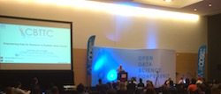

News and Upcoming Activity
-
Presenting at CHI's 8th International Leaders in Biobanking Congress 2016 in Balimore, MD. September 7-9, 2016
-
Presentation recording from ODSC.
ODSC East 2016 | Alex Felmeister – “Empowering Data for Research in Pediatric Brain Cancer”
-
2nd Annual Meeting of The Children’s Brain Tumor Tissue Consortium (CBTTC)
New Orleans, LA on May 24th and 25th, 2016.
The CBTTC Investigator meeting will bring together the member institutions and new institutions applying for membership including: Children’s Hospital of Philadelphia, Seattle Children’s, Children’s Hospital of Pittsburgh of UPMC, Ann and Robert H. Lurie Children’s Hospital of Chicago, and Meyer Children’s Hospital in Florence, Italy, Stanford Children’s Hospital, UCSF’s Benioff Children’s Hospital, Weill Cornell Children’s Hospital and Children’s National Hospital in Washington, D.C. along with scientists, clinicians and over 20 foundations.
-
Fantastic Experience @ODSCEast
Disruptive Data Science

-
Presenting at ODSC (Open Data Science Conference) East
Disruptive Data Science
How Modern web technologies, data visualization and open data integration tools can transform research in childhood cancer.
 ODSC East May 20-22 Boston Convention & Exhibition Center
ODSC East May 20-22 Boston Convention & Exhibition Center -
Passed Preliminaries Candidacy Exam
-
Presenting at AMIA Joint Summits on Translational Science
Mar 21 - 24, 2016 in San Fran.
Bringing Genomes Back to Biology: How Integration of Public Genomic Data Sets with a Biorepository Translate Genomic Discoveries into Biological Insight
More Info -
Shout out about CHOP's Tissue Repository Infrastructure from the White House!
-White House Fact Sheet
The Pressure is on!
-
Candidacy Exam Date Set
Defending my candidacy exam in the VERY near future.
Hopefully soon I will no longer be a "doctoral student" but a PhD Candidate.
Then the journey continues.
Right now: reading and writing. -
CHOP Announces New Center
Center for Data Driven Discovery in Biomedicine (D3b)
Open-Data Empowerment: A new disruptive model in biomedical research that will drive a new paradigm for precision medicine.
More Info -
Special Issue Invite in BMC Genomics
Invited to expand IEEE conference paper to full journal article in a special issue of BMC Genomics
This is a first!